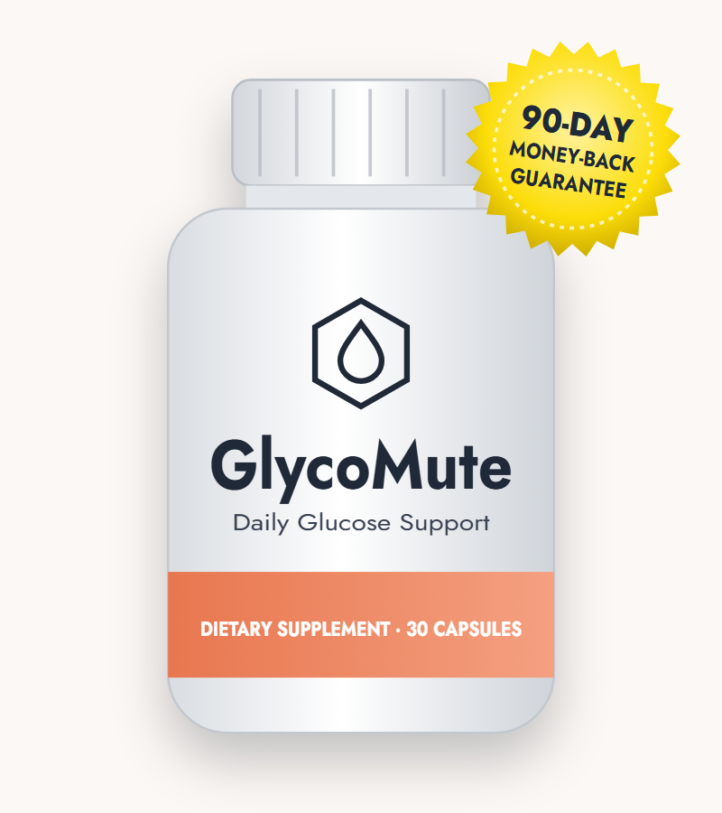
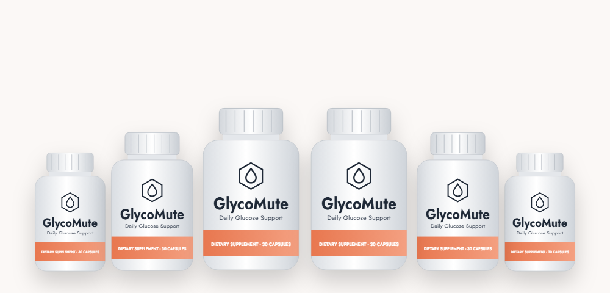

Insulin Sensitivity
Chromium, banaba, cinnamon, gymnema and alpha lipoic acid are studied for helping cells respond to insulin.*
The real GlycoMute label with doses, the research behind it, and how to order safely

GlycoMute is an "advanced glucose support" capsule sold online after a news-style "diabetes parasite" ad. Its supplement facts label lists 20 vitamins, minerals and plant extracts, all with disclosed doses. In this GlycoMute review we go through every ingredient, compare the doses with research, explain a confusing dosage instruction, and cover safety, price and how to order.
GlycoMute is a dietary supplement sold as "Advanced Glucose Support." Its bottle holds 30 capsules, and the label lists glycomute.com of Aurora, Colorado as the distributor. Orders go through the online retailer BuyGoods.
Most buyers arrive through a news-style ad titled "'Diabetes Parasite' Exposed," written as a story by "Peter Scott" with a long thread of glowing comments. The same ad, comments and testimonials appear word for word on pages selling other products, so they shouldn't be read as independent evidence.
The formula itself is a broad multi-ingredient blend: seven vitamins and minerals at disclosed doses plus thirteen botanicals and nutrients commonly used in blood sugar products. That transparency is a plus — you can see exactly what you're getting.
As with any supplement, it isn't a treatment for diabetes or prediabetes and shouldn't replace prescribed medicine or regular glucose checks.
Chromium, banaba, cinnamon, gymnema and alpha lipoic acid are studied for helping cells respond to insulin.*
White mulberry leaf contains 1-DNJ, which can slow the breakdown of starches and sugars.*
Vitamins C and E and alpha lipoic acid help counter oxidative stress linked to high blood sugar.*
Most of the botanicals are present at 10–50 mg. That's typical for a 20-ingredient capsule but far below study doses, so the overall effect is likely to be gentle. Chromium, at 670 mcg, is the one ingredient that matches research amounts.
The full supplement facts label, per one-capsule serving.
| Ingredient | Amount | Role |
|---|---|---|
| Vitamin C | 50 mg (56% DV) | Antioxidant |
| Vitamin E | 10 mg (67% DV) | Antioxidant |
| Magnesium (oxide) | 125 mg (30% DV) | Insulin signaling |
| Biotin | 300 mcg (1000% DV) | Carbohydrate metabolism |
| Zinc (oxide) | 7.5 mg (68% DV) | Insulin storage |
| Manganese | 1 mg (43% DV) | Enzyme cofactor |
| Chromium | 0.67 mg (1914% DV) | Insulin sensitivity |
| Banaba leaf (1% corosolic acid) | 25 mg | Glucose uptake |
| Guggul resin (2.5% guggulsterones) | 50 mg | Traditional metabolic herb |
| Bitter melon (7.5% bitter principles) | 50 mg | Glucose-lowering compounds |
| Licorice root (4:1) | 50 mg | Traditional tonic |
| Cinnamon bark (4:1) | 50 mg | Insulin sensitivity |
| Gymnema leaf | 50 mg | Sugar cravings |
| Yarrow | 25 mg | Traditional herb |
| Cayenne (40,000 HU) | 10 mg | Metabolism |
| Juniper berries | 25 mg | Traditional herb |
| White mulberry (1% 1-DNJ) | 25 mg | Slower carb absorption |
| Vanadium (vanadyl sulfate) | 0.2 mg | Insulin-like activity (lab) |
| Alpha lipoic acid | 30 mg | Antioxidant |
| Taurine | 25 mg | Metabolic support |
Other ingredients: natural gelatin, microcrystalline cellulose, magnesium stearate, rice flour, silica. No berberine.
| Ingredient | In each capsule | Typical study dose |
|---|---|---|
| Chromium | 670 mcg | 200–1,000 mcg |
| Gymnema | 50 mg | 200–400 mg |
| Cinnamon | 50 mg (4:1) | 1–6 g |
| Bitter melon | 50 mg | 1–2 g |
| White mulberry | 25 mg | 250 mg–1 g |
| Alpha lipoic acid | 30 mg | 300–600 mg |
| Magnesium | 125 mg | 250–400 mg |
Chromium has the most consistent dose match, and trials suggest a modest benefit for some people with type 2 diabetes. The other blood sugar botanicals are at a small fraction of studied amounts. The sales page's "proven" claims and "not a single complaint" can't be verified.
Our take: GlycoMute is a transparent, broad formula with one well-dosed ingredient. Expect gentle support at most, alongside diet and activity.
We found two different instructions from the vendor:
Each bottle is sold as a 30-day supply, which only works at one capsule a day. Doubling up would also double the biotin (to 600 mcg) and chromium (to 1,340 mcg). We recommend following the printed label — one capsule with food — and asking the vendor or your doctor before taking more.
Take it with your largest meal, keep it cool and dry below 86°F, and track your glucose readings for a few weeks before and after starting.
When we compared labels, GlycoMute's supplement facts panel matched Gluco Armor's exactly: the same 20 ingredients, the same amounts, the same other ingredients and the same Aurora, Colorado distributor address. Both use the same BuyGoods checkout and package prices.
Supplement companies often sell one formula under several brand names aimed at different ad campaigns. There's nothing unsafe about that, but it's worth knowing so you don't buy two bottles of the same thing — and so you can compare prices across names.
GlycoMute is not the same as SugarMute, despite the similar name and ads. SugarMute is a fiber, clay and probiotic blend.
Chromium and banaba support normal glucose metabolism.*
Gymnema can briefly dull the taste of sugar.*
Vitamins C and E and ALA help counter oxidative stress.*
Every dose disclosed — no proprietary blend.*
Never reduce diabetes medicine on your own because you've started a supplement.
GlycoMute is a transparent, broad blood sugar formula with one well-dosed ingredient and many token ones, sold with misleading advertising. It may offer gentle support for adults who want an all-in-one capsule, but it's no substitute for medical care. Follow the label's one-capsule dose, buy from the official page for the 90-day guarantee, and judge it on your own readings.
Visit the GlycoMute Order PageMost blood sugar supplements, including this one, are built around a single idea: helping the body respond better to insulin. Here's what that means in plain language.
After you eat, carbohydrates are broken down into glucose, which enters the bloodstream. The pancreas releases insulin, a hormone that acts like a key, letting glucose move out of the blood and into muscle, liver and fat cells to be used for energy or stored.
With insulin resistance, cells respond less strongly to insulin, so the pancreas has to produce more of it to keep blood sugar normal. For years this can go unnoticed. Eventually, if the pancreas can't keep up, blood sugar climbs into the prediabetes range and later into type 2 diabetes.
The biggest contributors are excess fat around the waist and liver, physical inactivity, poor sleep, chronic stress, certain medicines and genetics. Age plays a role too, partly because muscle mass — a major glucose user — declines over time.
Supplement ingredients such as chromium, cinnamon and alpha lipoic acid have been studied as small add-ons to these foundations — not replacements for them.
Even 10 minutes helps muscles absorb glucose.
Vegetables and protein before carbs reduce after-meal spikes.
Liquid sugar raises glucose fastest.
Losing 5–7% of body weight significantly improves blood sugar in prediabetes.
Short sleep worsens insulin resistance.
The vendor's GlycoMute order page is hosted on thrivalon.com with checkout by BuyGoods, while the label names glycomute.com as the distributor. Sites such as usa-en-glycomute.com and glycomute-eng.com also use the name. To buy the genuine product:
60-Day Supply
$79/bottle
No bonuses
180-Day Supply
$49/bottle
+ 2 free e-books
90-Day Supply
$59/bottle
+ 2 free e-books
Prices checked October 18, 2026 and may change. E-books: "The Deep Sleep and Metabolic Reset Protocol" and "The Blood Sugar Brain Blueprint." One-time payment.

Orders from the official page carry a 90-day money-back guarantee, described by the vendor as "no questions asked." Contact support well before day 90 and keep your receipt.
Try GlycoMute Risk-FreeGlycoMute is a glucose support supplement whose label lists 20 ingredients: vitamins C and E, magnesium, biotin, zinc, manganese and chromium, plus banaba, guggul, bitter melon, licorice, cinnamon, gymnema, yarrow, cayenne, juniper, white mulberry, vanadium, alpha lipoic acid and taurine. Each bottle holds 30 capsules.
Chromium is included at a dose used in studies, but most of the botanicals are at 10 to 50 mg, well below the amounts tested in research. There is no published trial on GlycoMute itself. It may offer modest support alongside diet and exercise, and it is not a diabetes treatment.
The supplement facts label says one capsule daily with food, while the vendor's FAQ says two capsules daily with a meal. Each bottle has 30 capsules and is sold as a 30-day supply, which matches one a day. Follow the label on your bottle and ask the vendor if you are unsure.
On the official order page GlycoMute costs $79 per bottle for 2 bottles ($158 plus shipping), $59 per bottle for 3 bottles ($177 with free US shipping) and $49 per bottle for 6 bottles ($294 with free US shipping). The 3- and 6-bottle packages include two free e-books.
The GlycoMute supplement facts label lists the same 20 ingredients at the same doses as Gluco Armor, and both are distributed from Aurora, Colorado and sold through BuyGoods. They are marketed under different names but appear to share one formula.
Possible side effects include stomach upset and low blood sugar in people taking diabetes medicine. The 300 mcg of biotin can interfere with some lab tests, and licorice, guggul and cinnamon may interact with certain medicines. Talk to your doctor before taking GlycoMute if you take prescription drugs.
The vendor's order page is on thrivalon.com, with checkout handled by BuyGoods, and the label names glycomute.com as the distributor. Look-alike sites such as usa-en-glycomute.com and glycomute-eng.com also use the name.
No. GlycoMute is sold as a one-time payment for the package you choose.
GlycoMute has a 90-day money-back guarantee. Contact the vendor within 90 days of purchase if you are not satisfied.
No. The names and ads are similar, but SugarMute is a fiber, clay and probiotic blend while GlycoMute contains vitamins, minerals and botanicals such as chromium, gymnema and bitter melon.
No. The GlycoMute label does not list berberine. Its main blood sugar ingredients are chromium, banaba, gymnema, bitter melon, cinnamon and white mulberry.
The vendor says most people notice a difference in the first week and recommends four months of use. Judge it with your own glucose readings over several weeks.
Get GlycoMute for as little as $49 per bottle with free US shipping on the 6-bottle package, two free e-books and a 90-day money-back guarantee.
Order GlycoMute Now